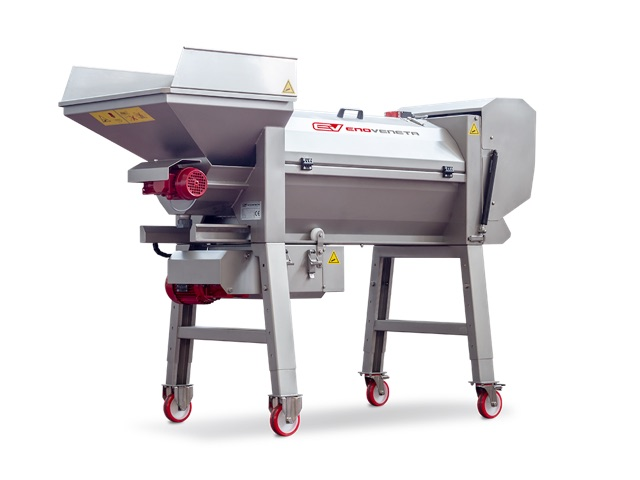
Как читать. У каждой цифры есть статус: ПОДТВЕРЖДЕНО — источник именно по объекту; ТИПОВОЕ — каталог производителя или аналог; РАСЧЁТНОЕ — посчитано, формула в файлах; НЕИЗВЕСТНО — данных нет. Это учебная предпроектная база, а не проект и не данные Arba Wine.
Главные выводы
- Проектная мощность — 300 т/сезон, ≈240 тыс. бутылок. 275 тыс. из задания недостижимо даже без потерь, 250 тыс. — на пределе.
- Участка 0,75 га хватает с запасом. По норме плотности застройки (≥50 %) он даже великоват.
- Площадка для учёбы — «Шелек — Майское». Юридическая доступность земли не подтверждена.
- Санитарно-защитная зона — 300 м до жилья: завод не может стоять внутри села.
- Питание — 10 кВ; трансформаторы 1 × 250 кВА + ДГУ 80/88 кВА или 2 × 160 кВА — по расчёту, а не заранее.
- Финансы Arba Wine не опубликованы. Выручка 1,1–1,7 млрд ₸ — оценка сервиса, а не отчётность.
1. Аналог: Arba Wine
ТОО «ARBA WINE», с. Каракемер, долина р. Тургень, ≈1 000 м. Полный цикл: собственный виноград, ручной сбор с 20 августа до середины октября, прессы Bucher Vaslin, танки Gortani, бочковая выдержка, розлив Alfatek 2 500 бут./ч.
| Показатель | Что найдено | Статус |
|---|---|---|
| Виноградники | 52 га (2016), 267 га (2021), ≈170 + 49 га (2022) | СМИ противоречиво |
| Выпуск | до 300 тыс. бут. (KAZNEX, 2016); ≈400 тыс. (The Buyer, 2016); 80–100 тыс. (блог, 2022) | СМИ противоречиво |
| Мощность | 400 тыс. бут./год — слова владельца (SCMP, 2020) | заявление |
| «547 тыс. бут.» | Нет ни в одном источнике. Совпадает с 109,5 га × 5 000 бут./га | не данные Arba |
| Выручка 2017–2022 | 1,6 / 1,5 / 1,7 / 1,6 / 1,2 / 1,1 млрд ₸ — «оценочная выручка» ElDala.kz со ссылкой на statsnet | оценка сервиса |
| Прибыль, налоги, переработка | Не найдено | НЕИЗВЕСТНО |
2. Проверка задания и выбор мощности
| Параметр задания | Проверка | Вывод |
|---|---|---|
| 54,75 га × 5,6 т/га = 306,6 т | Средняя урожайность РК 2025 — 5,55 т/га (МСХ) | Согласовано |
| Переработка 300 т | 306,6 т минус ≈2 % отхода на сортировке | Согласовано |
| Сусло 214 620 л | = 306,6 т × 0,7 — посчитано от сбора | Для 300 т — 210 000 л |
| 0,7 л/кг | Верхняя граница выхода сусла по всем фракциям (UC Davis ≈690 л/т) | Это не выход вина |
| 250–275 тыс. бут. | 300 т × 0,64–0,70 л/кг × 0,907 (осадки, фильтрация, розлив) / 0,75 л | ≈243 тыс.; принять 240 тыс. |
| Прежний вариант 600 т → 500–550 тыс. | Тот же расчёт | ≈490 тыс. |
Сценарии урожайности
| Показатель | Низкий 4,0 т/га | Базовый 5,6 т/га | Высокий 7,5 т/га |
|---|---|---|---|
| Сбор / переработка, т | 219 / 215 | 307 / 300 | 411 / 402 |
| Пиковая приёмка, т/сут | 10,7 | 15,0 | 20,1 |
| Линия приёмки, т/ч | 1,7 | 2,4 | 3,3 |
| Готовое вино, м³ / бутылок, тыс. | 130 / 174 | 183 / 243 | 244 / 326 |
| Ёмкости, м³ / бочек 225 л | 182 / 128 | 255 / 179 | 341 / 240 |
| Барабан пресса, гл | 22 | 31 | 42 |
| Холод, кВт холода / кВт эл. | 32 / 20 | 45 / 28 | 60 / 37 |
| Линия розлива, бут./ч | 590 | 830 | 1 110 |
Холодопроизводительность (кВт холода) и электрическая мощность чиллера — разные величины. Метод расчёта холода — AWRI, 2012.
3. Технология
- Ручной сбор
20.08–15.10 - Приёмка, весы, сортировка
- Белое: прессование целыми гроздьями → охлаждение, отстой → брожение 12–18 °C
- Красное: гребнеотделение → брожение на мезге 24–30 °C → прессование
- ЯМБ 18–22 °C
подогрев, X–I - Выдержка: танки, бочки, погреб 12–15 °C
- Холодная стабилизация −4…−5 °C
- Фильтрация → розлив с азотом
- Оформление, склад
Параллельно в сезон идут приёмка новых партий, брожение принятых и отжим сброженной мезги, поэтому пик нагрузки приходится на конец сентября. Круглый год работают холод, климат погреба и очистные. Розлив — в межсезонье.
4. Аналоги: что подтверждено у реальных виноделен
Казахстан
- Arba Wine — единственная, кто публикует модели: прессы Bucher Vaslin, танки Gortani, насос CSF A LOBI B215-3200, фильтр Spadoni MAC10, розлив Alfatek QBS-V 2 500 бут./ч, OMAR, R&G, C&G. Сезон 20.08 — середина октября, «практически круглосуточно».
- Голд Продукт (до 7 000 т), Silk Alley (3 000 т), Бахус — только «европейское оборудование», марок нет.
- Сервис в РК есть у Grundfos, Kaeser, Kärcher, Daikin, Breezart. У Bucher, GAI, Enoveneta, MTA — нет: нужен склад запчастей.
Зарубежье (12 аналогов)
- Grottarossa (Сицилия): полный реестр ЭП, ввод 15 кВ, максимум 318 кВт, cosφ 0,54–0,70 — нужна компенсация.
- Winery A (Австралия, ≈500 т): две холодильные машины, ≈376 кВт·ч/т.
- Albert Mann, Les Monderys, Кварели: прессы 40–50 гл, азот, автоматика ёмкостей, ввод ≈100 кВт на 200 т.
- Вывод: выбранные решения подтверждаются; годовое потребление пересчитано (было завышено).
5. Электроприёмники по объектам генплана
74 позиции, привязанные к объектам № 1–20; виноградник — отдельно. Количество всего / рабочих / резервных, паспортные мощности, режимы, Ки и cosφ, участие в сезонном, летнем и зимнем максимумах. Прежние 39 ЭП и ТП 2 × 160 кВА не переносились.
| Объект (щит) | Sр, кВА |
|---|---|
| № 2 Мойка, CIP, компрессорная, азот | 49,4 |
| № 11 АБК (электроотопление) | 39,9 |
| № 13 Площадка чиллеров | 38,3 |
| № 5 Лаборатория, ГРЩ, тепловой пункт | 30,2 |
| № 1 Приёмно-прессовое | 21,0 |
| № 3 Бродильно-хранильное | 18,0 |
| № 6 Цех розлива | 10,0 |
| № 20 Бокс БПЛА и АКБ | 9,7 |
| № 18 Очистные | 9,6 |
| Остальные объекты | ≈16 |
Ключевое оборудование
- Прессы Bucher Vaslin XPlus 40 + XPro 15 — 8,0 + 5,4 кВт
- Чиллеры 2 × MTA TAEevo Tech 201 — 2 × 17,35 кВт (31,4 кВт холода каждый, пуск 134 А)
- Приёмка Enoveneta: бункер, вибростол, TOP 5, насос мезги; весы Mettler Toledo
- Розлив GAI 1306 Y + этикетировщик GAI 6012W + термокапсула
- Сжатый воздух 2 × Kaeser SM 10 T, азот Inmatec PN 30 N
- ДГУ Kohler SDMO J88 80/88 кВА; пожарные насосы Grundfos CR 45-2 7,5 кВт (1 + 1)
Без паспорта (требует уточнения): термоголовка капсулятора, шнек выжимки, насос пластинчатого фильтра, вентилятор шкафа АКБ, приборы учёта алкоголя; очистные — оценка 8,3 кВт.
Оборудование: марки, модели, фото
Марка и модель указаны у 62 ЭП из 74. Карточки ниже — по одной на модель, в порядке объектов генплана; данные — лист «Ведомость» файла 03. Фото взяты со страниц производителей или их дилеров (ссылка под каждым фото) и показывают модель или её серию, а не оборудование конкретного завода. Фото найдено для 58 карточек.
Завод (объекты № 1–20)
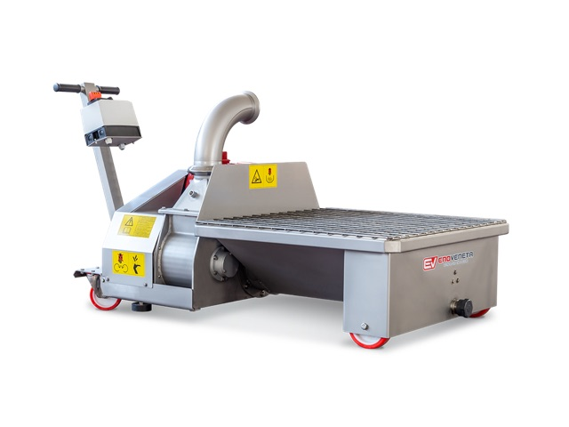
серия EVP
ЭП № 2 · объект № 1
Enoveneta EVP1 501
Насос мезги эллиптический роторный с бункером
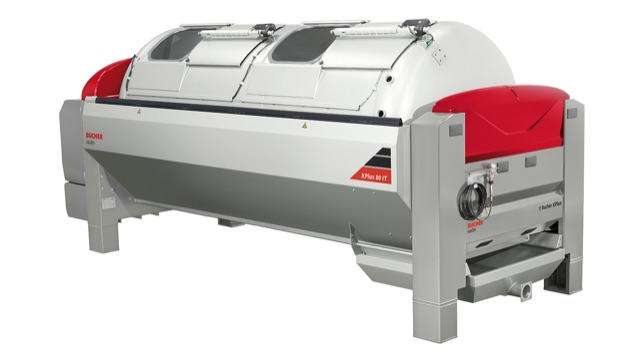
на фото XPlus 80, серия XPlus
ЭП № 3 · объект № 1
Bucher Vaslin XPlus 40 (IT)
Пневмопресс мембранный (основной, белые)
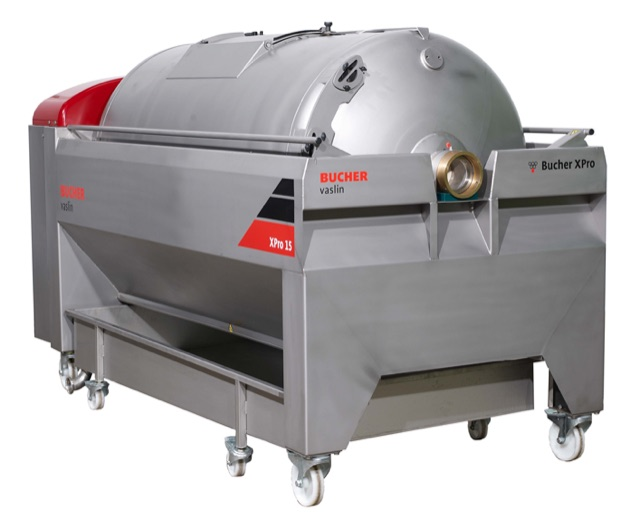
ЭП № 4 · объект № 1
Bucher Vaslin XPro 15
Пневмопресс мембранный (малый, красные/малые партии/резерв)
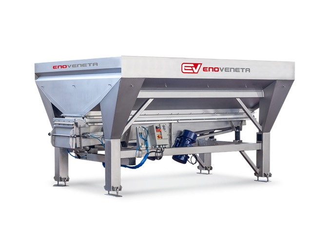
ЭП № 6 · объект № 1
Enoveneta Tramoggia vibrante 40 (4,0 т)
Бункер-приёмник вибрационный
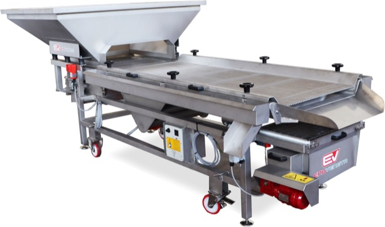
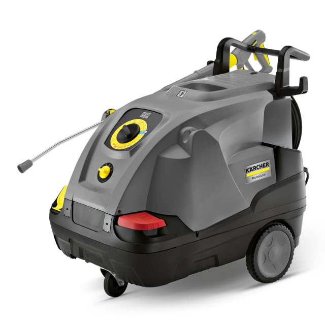
ЭП № 8 · объект № 2
Kärcher HDS 8/18-4 C
Аппарат высокого давления с подогревом (дизельная горелка)
фото не найдено
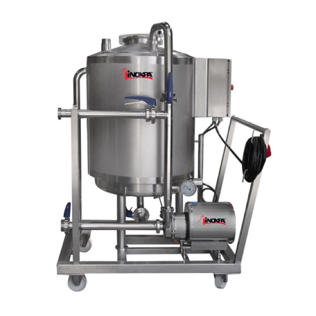
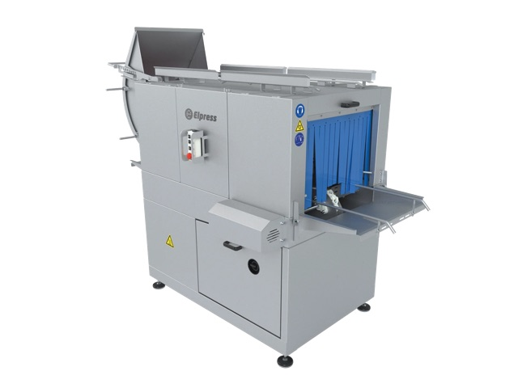
на фото машина Elpress EKW-1500
ЭП № 11 · объект № 2
Christeyns EKW 1500 (2 стадии: мойка + ополаскивание)
Машина мойки ящиков для винограда
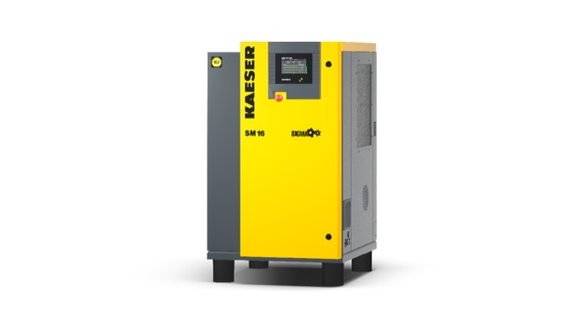
на фото SM 16, серия SM
ЭП № 12 · объект № 2
Kaeser SM 10 T
Винтовой компрессор со встроенным рефрижераторным осушителем
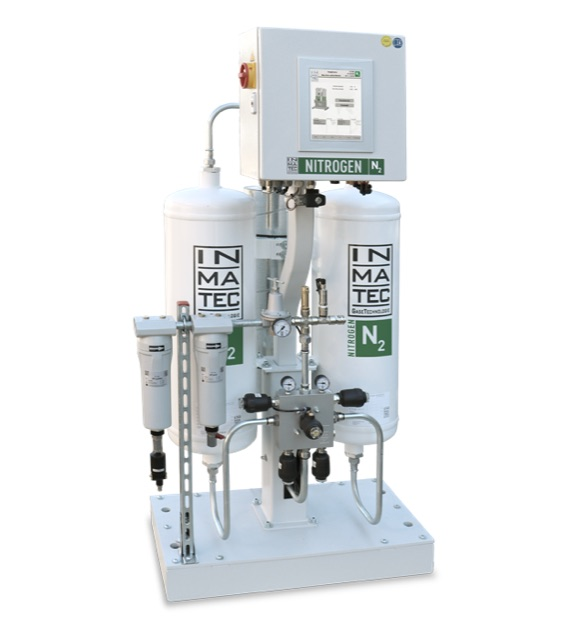
на фото PN 150, серия PN
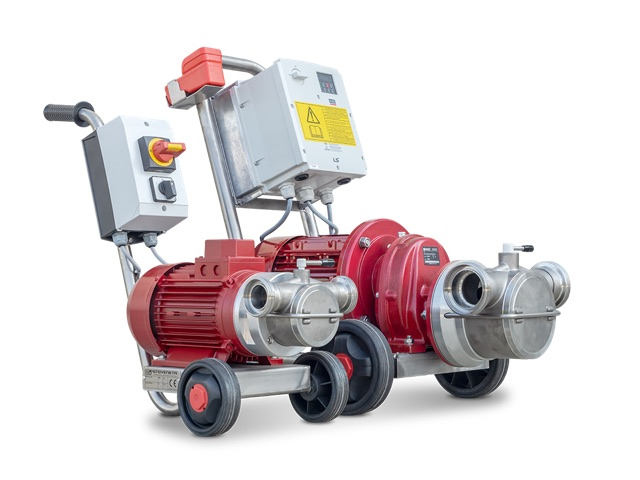
серия T
ЭП № 14, 15 · объект № 3
Enoveneta T60 2 VEL
Импеллерный насос вина/сусла (двухскоростной)
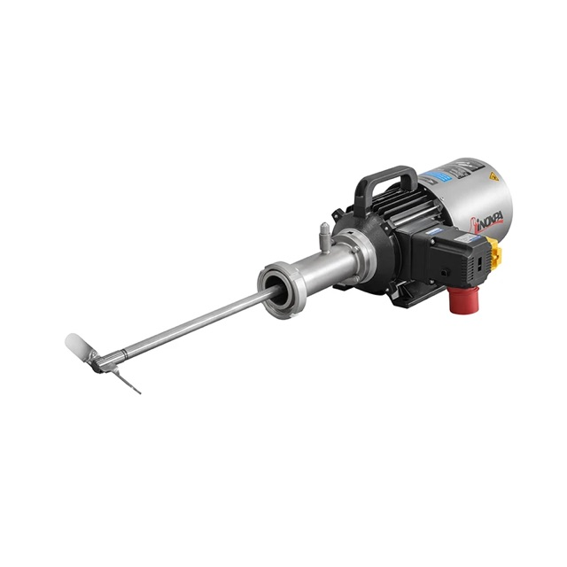
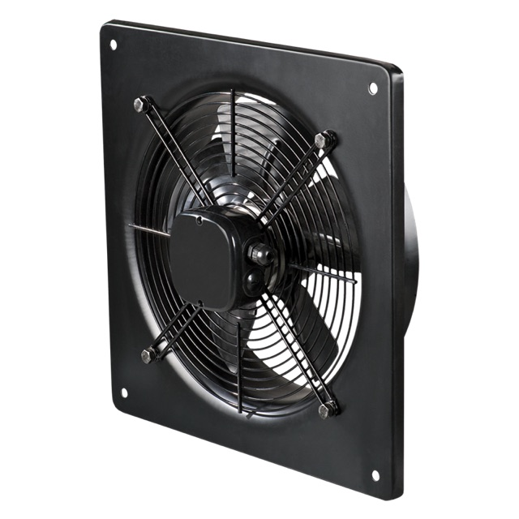
ЭП № 17 · объект № 3
VENTS OV 4D 450
Осевой настенный вентилятор вытяжки CO2 (нижняя зона)
фото не найдено
ЭП № 18 · объект № 3
Gas Detection Australia (дистрибьютор Onetemp) GDA 4350 (NDIR, диапазон 5 % об.)
Газоанализатор CO₂ (датчик NDIR)
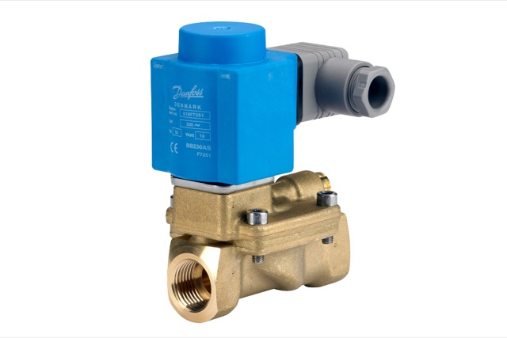
ЭП № 19 · объект № 3
Danfoss EV220B/EV221B + катушка BB230AS (018F7351)
Соленоидный клапан гликоля на танке
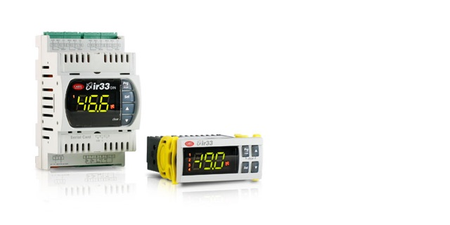
ir33 и DN33 (DIN)
ЭП № 20 · объект № 3
Carel DN33 / ir33 (115…230 В)
Регулятор температуры танка
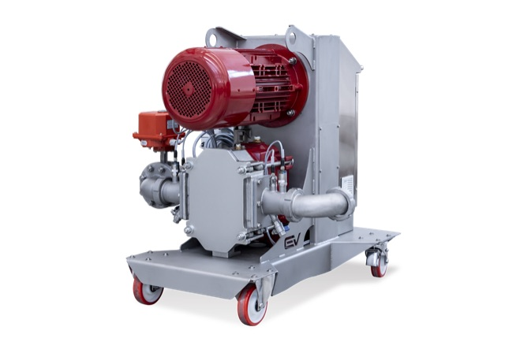
ЭП № 21 · объект № 3
Enoveneta LOBEV 25 E
Кулачковый (ротационно-лопастной) насос
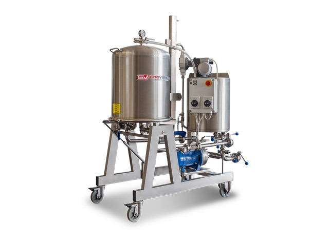
серия намывных фильтров
ЭП № 22 · объект № 3
Enoveneta FRM-3
Намывной фильтр малый (рекомендуется)
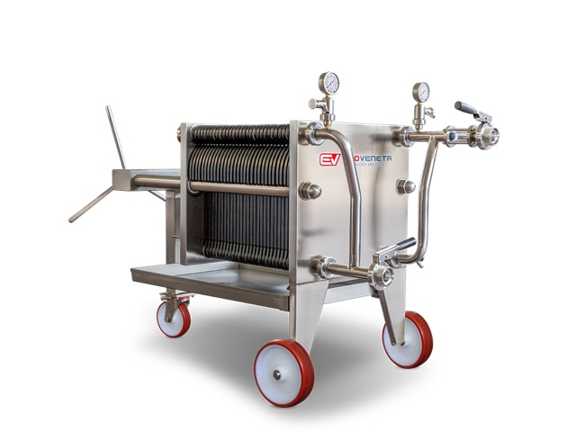
серия FRC
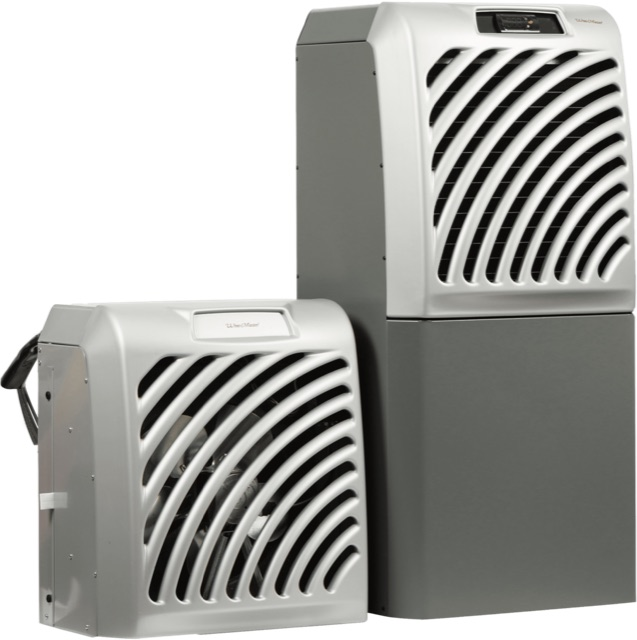
ЭП № 24 · объект № 4
Fondis WineMaster SP100
Сплит-система для винного погреба
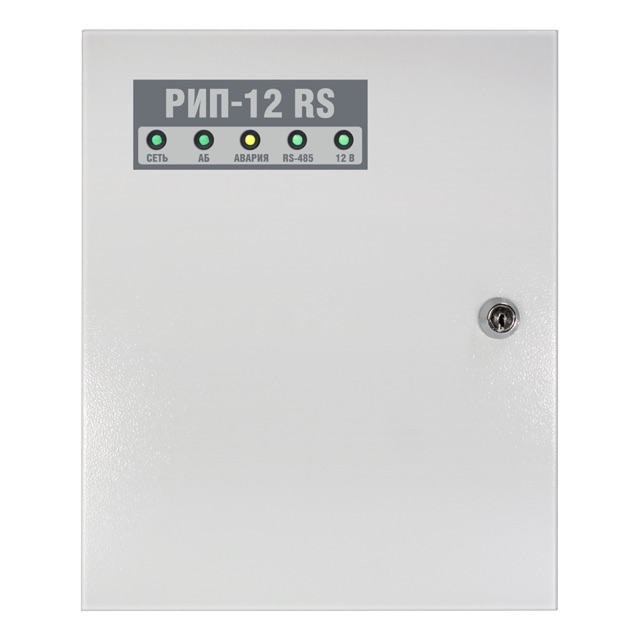
ЭП № 25 · объект № 5
Болид РИП-12 исп.50 (РИП-12-3/17М1-Р-RS)
Резервированный источник питания ОПС
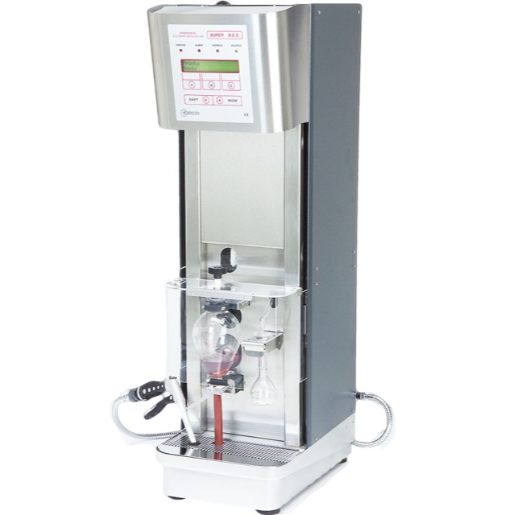
ЭП № 28 · объект № 5
Gibertini Super DEE
Автоматический дистиллятор (спирт, летучая кислотность, SO2)
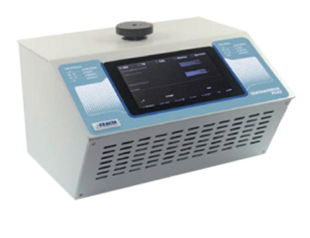
на фото Tartarcheck Plus
ЭП № 29 · объект № 5
Exacta Optech (Exacta+Optech Labcenter, Италия) Tartarcheck
Тест на тартратную стабильность
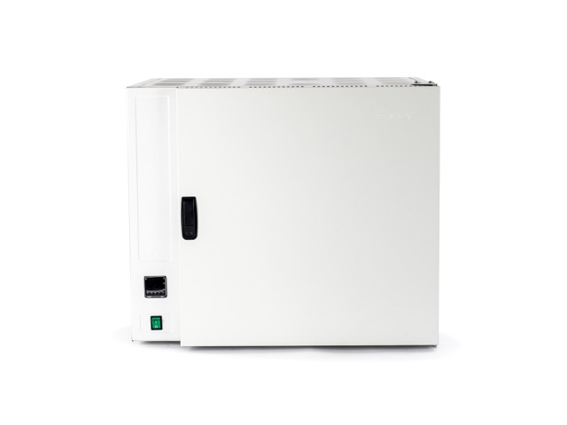
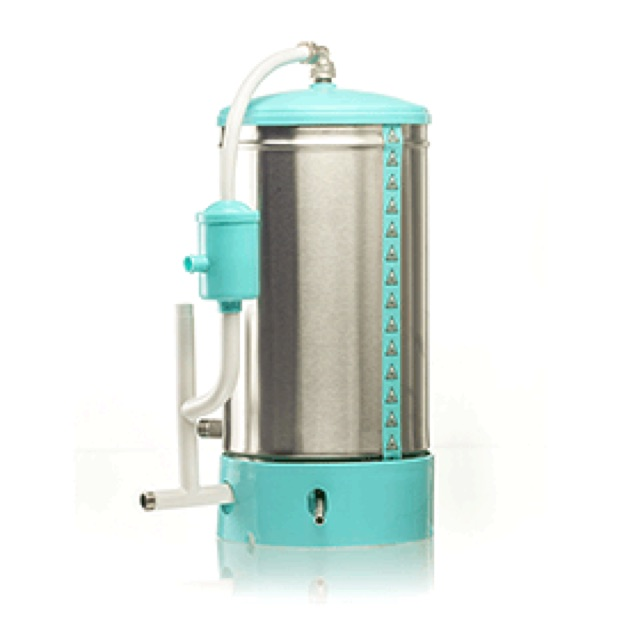
на фото ДЭ-4М, серия ДЭ-4
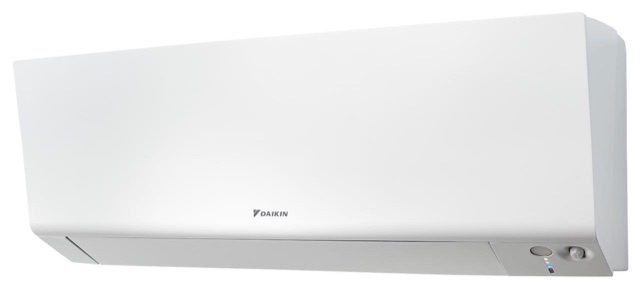
серия Perfera FTXM-R
ЭП № 34, 47, 61 · объект № 5, 11, 20
Daikin FTXM35R + RXM35R
Сплит-система АБК/лаборатории
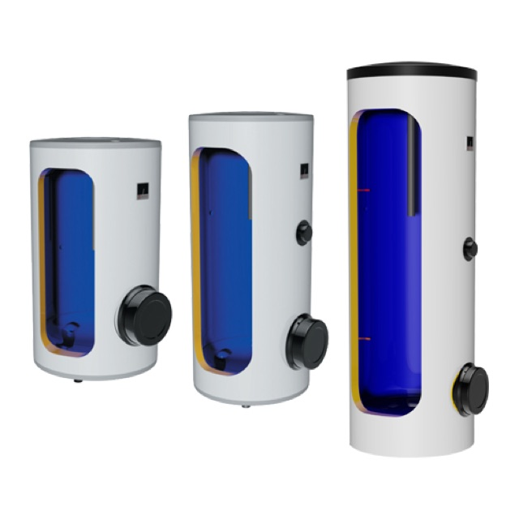
серия OKCE S 160–1000 л
ЭП № 35 · объект № 5
Dražice OKCE 500 S + TPK 210-12
Накопительный водонагреватель 462 л с фланцевым ТЭН 12 кВт
фото не найдено
ЭП № 36 · объект № 6
GAI 1306 Y (9 ополаск. / 8 клапанов)
Моноблок ополаскивание/продувка–розлив–укупорка пробкой под вакуумом (+капсула)
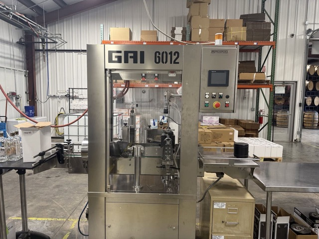
фото б/у машины у перепродавца
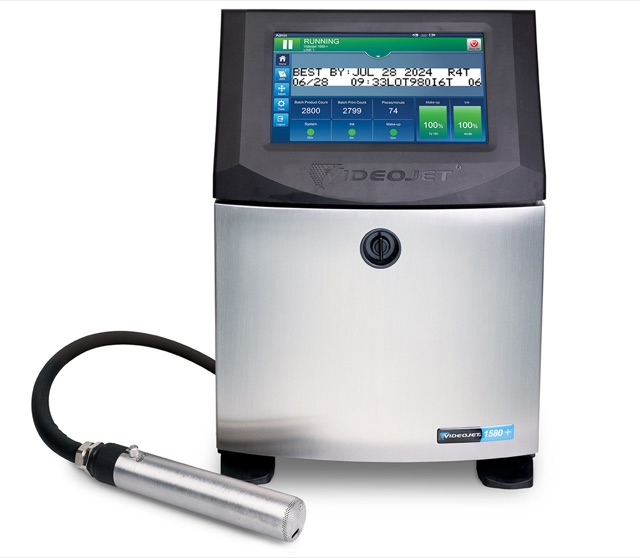
на фото 1580+ (преемник 1580)
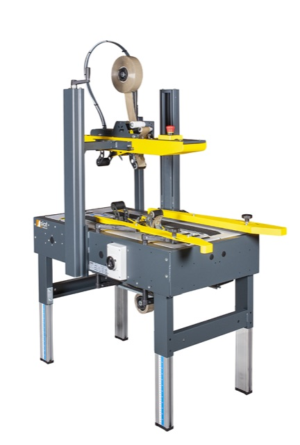
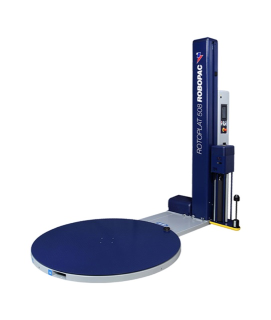
фото дилера
ЭП № 42 · объект № 6
Robopac Rotoplat 508
Паллетообмотчик стретч-плёнкой (поворотный стол)
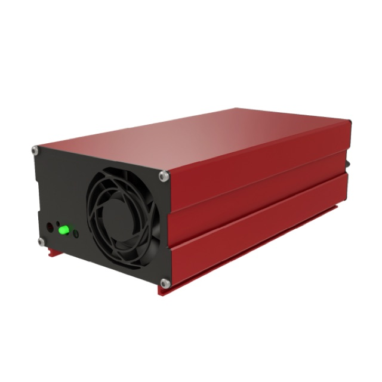
на фото Micropower Sharp 20
ЭП № 44 · объект № 8
Century (GS Yuasa) SHARP 20 CG5302
Зарядное устройство АКБ электроштабелёра 24 В/30 А (ВЧ)
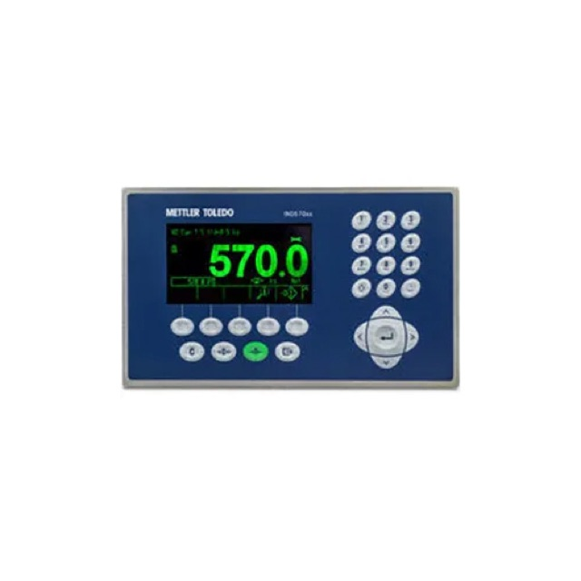
фото витрины Mettler Toledo India
ЭП № 45 · объект № 10
METTLER TOLEDO IND570 (корпус harsh/panel) + платформа PFK9 до 3 000 кг
Весы платформенные 3 т для ящиков/контейнеров с виноградом (терминал)
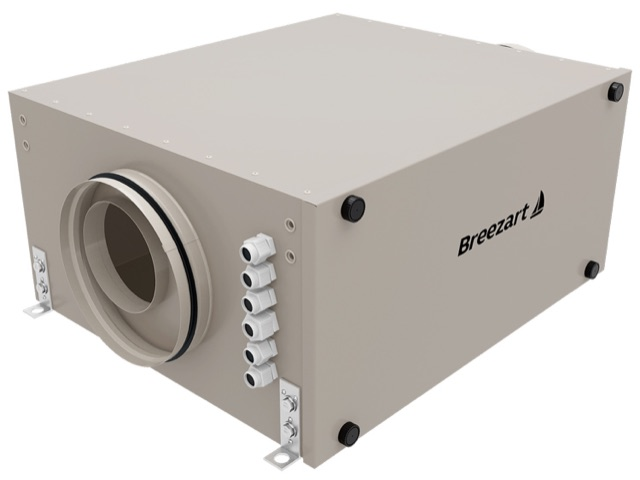
ЭП № 46 · объект № 11
Breezart 1000 Lux (калорифер 14,4 кВт)
Приточная установка с электрокалорифером
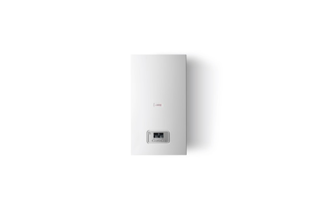
на фото Protherm Ray (Скат), текущее исполнение
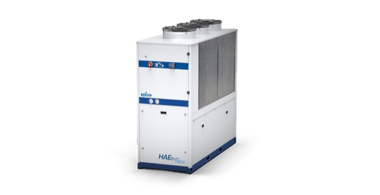
серия HAEevo Tech
ЭП № 50 · объект № 13
MTA HAEevo Tech 031
Тепловой насос воздух–вода реверсивный
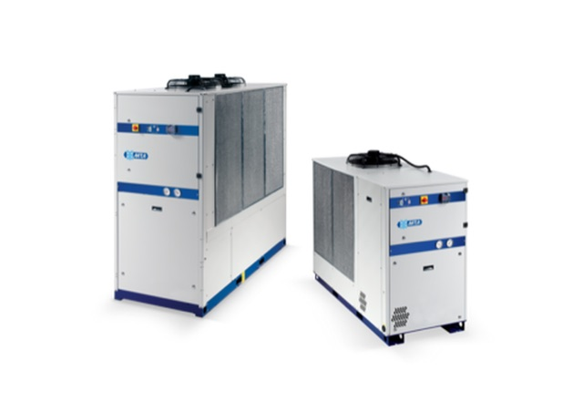
серия TAEevo Tech
ЭП № 51 · объект № 13
MTA TAEevo Tech 201 (исп. P3, осевые вентиляторы)
Чиллер гликолевый, воздушное охлаждение конденсатора, 2 компрессора
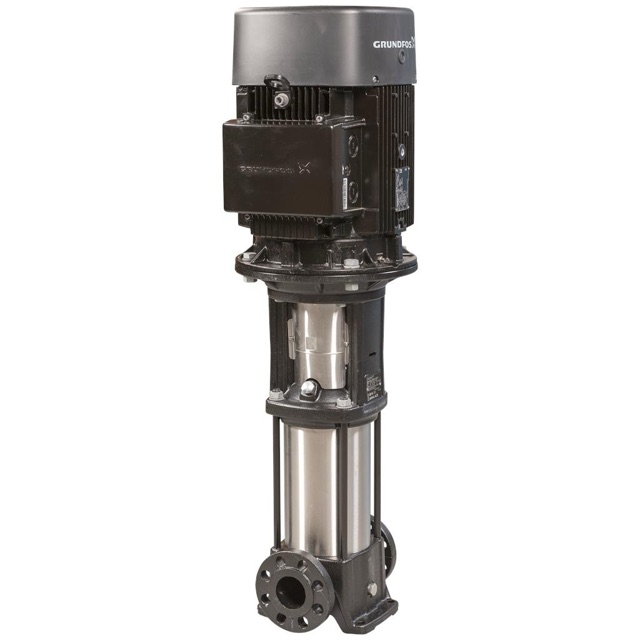
на фото CR 15-1, серия CR
ЭП № 52 · объект № 13
Grundfos CR 15-3 A-A-A-E-HQQE (96501906)
Насос гликолевого контура (вторичный)
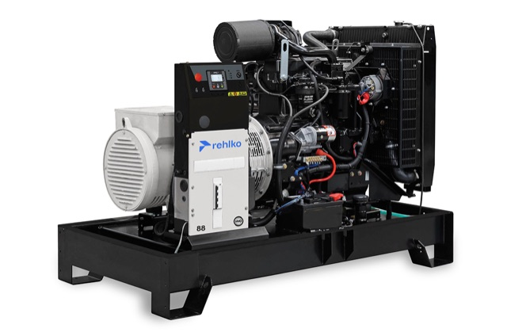
ЭП № 53 · объект № 15
Kohler (Rehlko) KD100 (60 Гц, США) — опции
Собственные нужды ДГУ: подогреватель охлаждающей жидкости, зарядное АКБ
ЭП № — · объект № 15
Kohler SDMO J88 (80/88 кВА, 400 В)
Дизель-генератор — резервный источник I и II категорий (не ЭП)
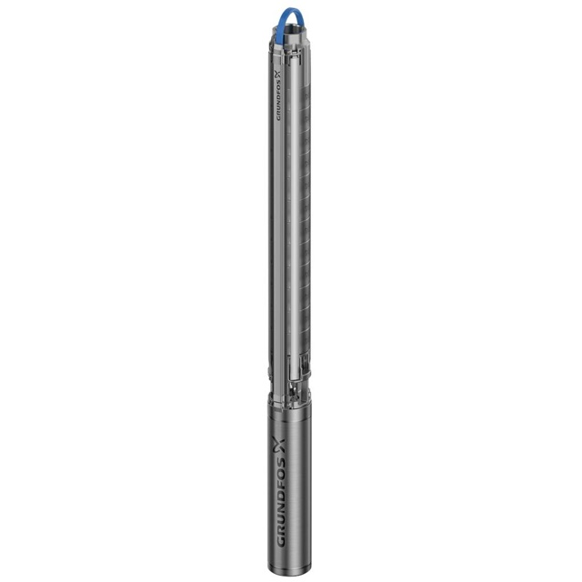
на фото SP 7-12, серия SP 7
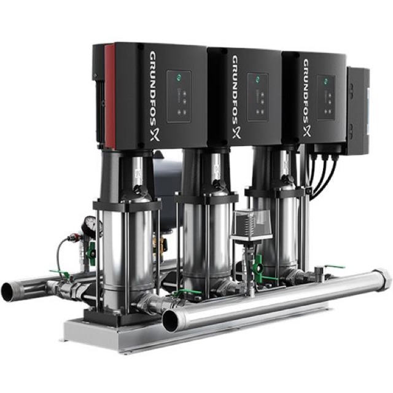
на фото станция из 3 насосов
ЭП № 55 · объект № 16
Grundfos Hydro Multi-E 2 CRE 5-5 (91048855)
Насосная станция повышения давления (2 насоса с ЧРП)
на фото CR 15-1, серия CR
ЭП № 56 · объект № 16
Grundfos CR 3-10 A-A-A-E-HQQE (96529510)
Жокей-насос системы пожаротушения
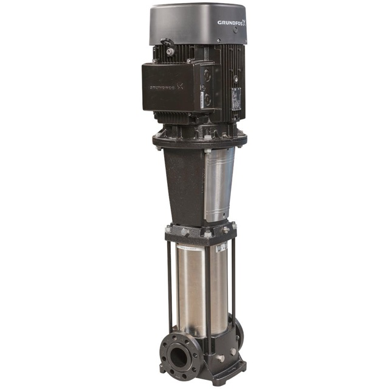
на фото CR 45-1, серия CR
ЭП № Резерв · объект № 16
Grundfos CR 45-2 A-F-A-E-HQQE (96122799)
Насос пожаротушения ВПВ (1 раб. + 1 рез.)
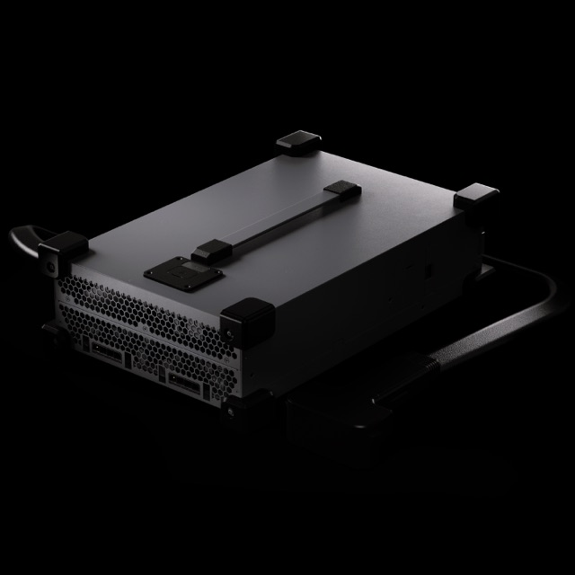
ЭП № 58 · объект № 20
DJI C10000 Intelligent Power Supply (CSX702-9500)
Зарядное устройство агродрона
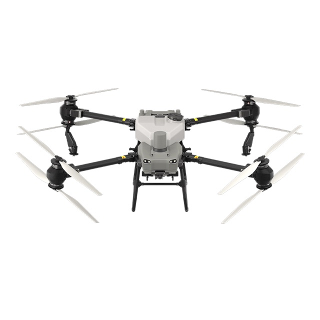
ЭП № — · объект № 20
DJI Agras T50
Агродрон — заряжается от C10000 (сам дрон не ЭП)
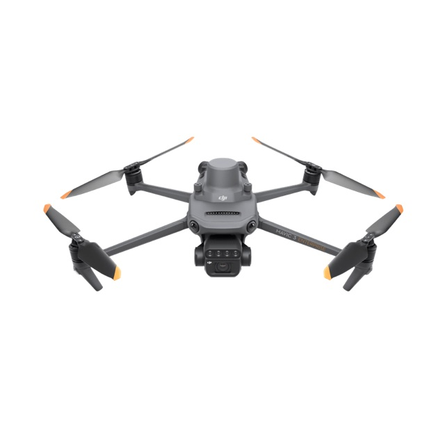
ЭП № 59 · объект № 20
DJI Mavic 3 Multispectral (зарядное устройство)
Зарядка мультиспектрального дрона
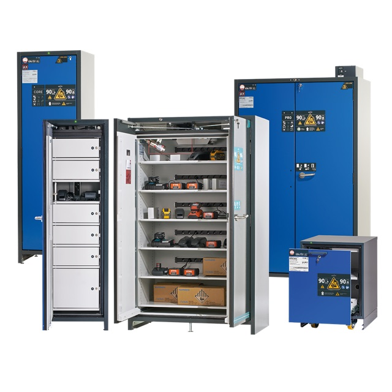
серия ION-LINE
ЭП № 60 · объект № 20
asecos ION-PRO-90 CHARGE IO90.195.120.PC.WDC
Шкаф хранения и зарядки Li-ion АКБ БПЛА
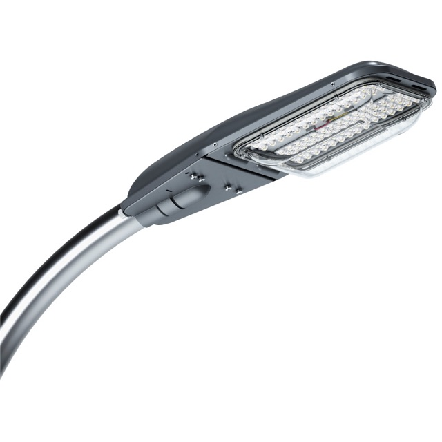
серия Победа LED
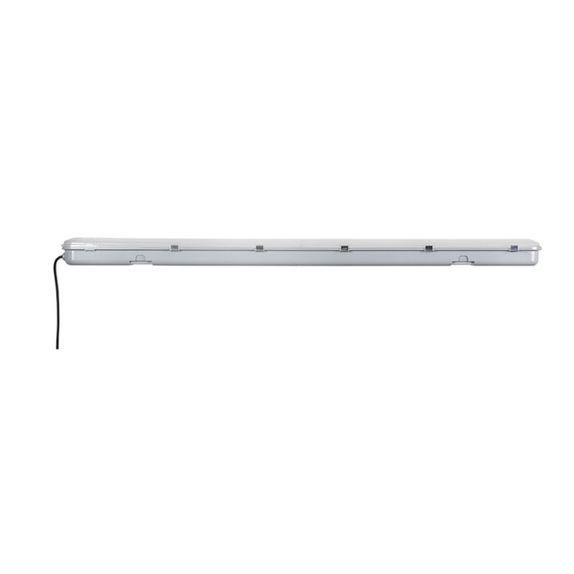
серия Арклайн Эконом
ЭП № 63 · все объекты
GALAD (аналог) Арклайн LED-36 и др.
Внутреннее освещение помещений (светодиодное)
Виноградник: орошение и автоматика (вне площадки)
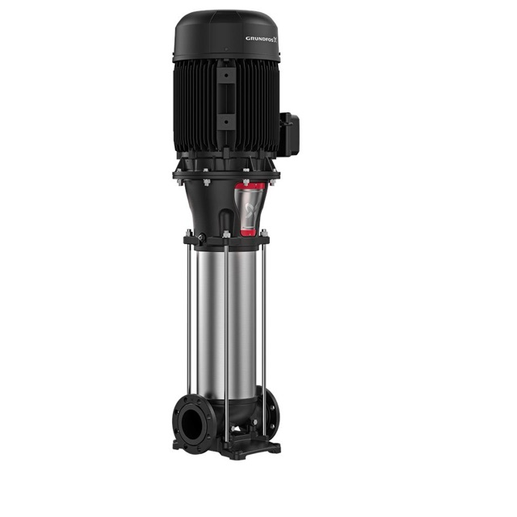
на фото CR 125-1, серия CR
ЭП № 64 · виноградник
Grundfos CR 125-2-1
Насос повышения давления капельной сети
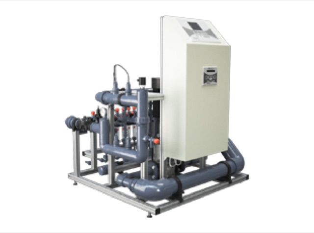
ЭП № 65 · виноградник
Netafim (насос Grundfos CRI) NetaJet 4G BPL, насос CRI 5-12 50 Hz
Бустерный насос NetaJet 4G (BPL)
ЭП № 67 · виноградник
Azud (или Amiad/Arkal, Netafim) Azud Helix Automatic + FBC (уточнить)
Контроллер автопромывки дисковых фильтров
фото интернет-магазина
ЭП № 68, 69 · виноградник
Bermad S-390-T-2W-24VAC-R
Соленоид клапана промывки
фото интернет-магазина
ЭП № 70 · виноградник
METER Group TEROS 12
Датчик влажности/температуры/EC почвы
ЭП № 72 · виноградник
Davis Instruments / METOS (Pessl) Vantage Pro2 / iMetos (уточнить)
Метеостанция
ЭП № 73 · виноградник
RAKwireless WisGate Edge Pro RAK7289V2 (RAK7289CV2 с LTE)
LoRaWAN-шлюз наружный
Все 74 электроприёмников с марками и моделями
| № ЭП | Наименование | Производитель | Модель | Pн ед., кВт | Кол-во всего / раб. | Pуст = Pн × раб., кВт |
|---|---|---|---|---|---|---|
| 1 — Приёмно-прессовое отделение | ||||||
| 1 | Гребнеотделитель-дробилка | Enoveneta | TOP 5 | 2,45 | 1 / 1 | 2,45 |
| 2 | Насос мезги эллиптический роторный с бункером | Enoveneta | EVP1 501 | 3 | 1 / 1 | 3 |
| 3 | Пневмопресс мембранный (основной, белые) | Bucher Vaslin | XPlus 40 (IT) | 8 | 1 / 1 | 8 |
| 4 | Пневмопресс мембранный (малый, красные/малые партии/резерв) | Bucher Vaslin | XPro 15 | 5,4 | 1 / 1 | 5,4 |
| 5 | Шнек/транспортёр выгрузки выжимки | нет марки НЕИЗВЕСТНО | по проекту | — | 1 / 1 | — |
| 6 | Бункер-приёмник вибрационный | Enoveneta | Tramoggia vibrante 40 (4,0 т) | 1,44 | 1 / 1 | 1,44 |
| 7 | Сортировочный вибростол | Enoveneta | TVC 3 EVO | 1,28 | 1 / 1 | 1,28 |
| 2 — Мойка тары, CIP, компрессорная, азот | ||||||
| 8 | Аппарат высокого давления с подогревом (дизельная горелка) | Kärcher | HDS 8/18-4 C | 6 | 1 / 1 | 6 |
| 9 | Электропарогенератор | Tecnovap | Bacchus Industrial 14,6 кВт | 14,6 | 1 / 1 | 14,6 |
| 10 | Мобильная CIP-станция | INOXPA | CIP Manual Mobile (300 л) | 22,5 | 1 / 1 | 22,5 |
| 11 | Машина мойки ящиков для винограда | Christeyns | EKW 1500 (2 стадии: мойка + ополаскивание) | 3,18 | 1 / 1 | 3,18 |
| 12 | Винтовой компрессор со встроенным рефрижераторным осушителем | Kaeser | SM 10 T | 5,87 | 2 / 2 | 11,74 |
| 13 | Генератор азота PSA | Inmatec (BOGE) | PN 30 N | 0,15 | 1 / 1 | 0,15 |
| 3 — Бродильно-хранильное отделение (ёмкости ≈255 м³) | ||||||
| 14 | Импеллерный насос вина/сусла (двухскоростной) | Enoveneta | T60 2 VEL | 2,2 | 2 / 2 | 4,4 |
| 15 | Импеллерный насос с инвертором (ремонтаж) | Enoveneta | T60 INV | 2,2 | 1 / 1 | 2,2 |
| 16 | Боковая мешалка танка | INOXPA | CPG | 1,1 | 1 / 1 | 1,1 |
| 17 | Осевой настенный вентилятор вытяжки CO2 (нижняя зона) | VENTS | OV 4D 450 | 0,296 | 3 / 2 | 0,59 |
| 18 | Газоанализатор CO₂ (датчик NDIR) | Gas Detection Australia (дистрибьютор Onetemp) | GDA 4350 (NDIR, диапазон 5 % об.) | 0,001 | 4 / 4 | 0 |
| 19 | Соленоидный клапан гликоля на танке | Danfoss | EV220B/EV221B + катушка BB230AS (018F7351) | 0,011 | 30 / 30 | 0,33 |
| 20 | Регулятор температуры танка | Carel | DN33 / ir33 (115…230 В) | 0,02 | 30 / 30 | 0,6 |
| 21 | Кулачковый (ротационно-лопастной) насос | Enoveneta | LOBEV 25 E | 5,5 | 1 / 1 | 5,5 |
| 22 | Намывной фильтр малый (рекомендуется) | Enoveneta | FRM-3 | 2,44 | 1 / 1 | 2,44 |
| 23 | Пластинчатый фильтр 40×40 | Enoveneta | FRC-40-20 | — | 1 / 1 | — |
| 4 — Бочковый погреб (≈180 бочек) | ||||||
| 24 | Сплит-система для винного погреба | Fondis WineMaster | SP100 | 1,25 | 5 / 5 | 6,25 |
| 5 — Лаборатория, ГРЩ, тепловой пункт | ||||||
| 25 | Резервированный источник питания ОПС | Болид | РИП-12 исп.50 (РИП-12-3/17М1-Р-RS) | 0,155 | 3 / 3 | 0,46 |
| 26 | Серверная стойка (сервер, сеть, ИБП) и шкафы управления ПЛК | нет марки не выбран | — | 1,5 | 1 / 1 | 1,5 |
| 27 | SCADA верхнего уровня: АРМ/сервер, коммутатор, ИБП | нет марки НЕИЗВЕСТНО | НЕИЗВЕСТНО | 0,5 | 1 / 1 | 0,5 |
| 28 | Автоматический дистиллятор (спирт, летучая кислотность, SO2) | Gibertini | Super DEE | 3,3 | 1 / 1 | 3,3 |
| 29 | Тест на тартратную стабильность | Exacta Optech (Exacta+Optech Labcenter, Италия) | Tartarcheck | 0,1 | 1 / 1 | 0,1 |
| 30 | Сушильный шкаф | SNOL | 58/350 | 2 | 1 / 1 | 2 |
| 31 | Аквадистиллятор | ЭМО | ДЭ-4-02 | 3 | 1 / 1 | 3 |
| 32 | Термостат | нет марки — | ТС-1/80 СПУ | 0,3 | 1 / 1 | 0,3 |
| 33 | Спектрофотометр, pH-метр, рефрактометр/плотномер, центрифуга, холодильник лабораторный, плитка, вытяжной шкаф (вентилятор) | нет марки не выбран | — | 2,5 | 1 / 1 | 2,5 |
| 34 | Сплит-система АБК/лаборатории | Daikin | FTXM35R + RXM35R | 0,99 | 1 / 1 | 0,99 |
| 35 | Накопительный водонагреватель 462 л с фланцевым ТЭН 12 кВт | Dražice | OKCE 500 S + TPK 210-12 | 12 | 2 / 2 | 24 |
| 6 — Цех розлива | ||||||
| 36 | Моноблок ополаскивание/продувка–розлив–укупорка пробкой под вакуумом (+капсула) | GAI | 1306 Y (9 ополаск. / 8 клапанов) | 4,2 | 1 / 1 | 4,2 |
| 37 | Этикетировщик самоклеящийся | GAI | 6012W | 1,5 | 1 / 1 | 1,5 |
| 38 | Термоголовка капсулятора (термоусадочный колпачок) | нет марки требует уточнения (GAI / Robino & Galandrino) | — | — | 1 / 1 | — |
| 39 | Каплеструйный принтер (датер) | Videojet | 1580 | 0,07 | 1 / 1 | 0,07 |
| 40 | Конвейеры между машинами (вход/выход моноблока, к этикетировщику, стол накопления) | нет марки не выбран | — | 0,37 | 3 / 3 | 1,11 |
| 41 | Заклейщик коробов скотчем | SIAT | SK10 | 0,13 | 1 / 1 | 0,13 |
| 42 | Паллетообмотчик стретч-плёнкой (поворотный стол) | Robopac | Rotoplat 508 | 1,9 | 1 / 1 | 1,9 |
| 43 | Контрольные приборы учёта (КПУ) объёма алкогольной продукции с ИБП | нет марки требует уточнения | требует уточнения | — | 1 / 1 | — |
| 8 — Склад готовой продукции | ||||||
| 44 | Зарядное устройство АКБ электроштабелёра 24 В/30 А (ВЧ) | Century (GS Yuasa) | SHARP 20 CG5302 | 0,93 | 1 / 1 | 0,93 |
| 10 — Навес приёмки винограда, весы | ||||||
| 45 | Весы платформенные 3 т для ящиков/контейнеров с виноградом (терминал) | METTLER TOLEDO | IND570 (корпус harsh/panel) + платформа PFK9 до 3 000 кг | 0,12 | 1 / 1 | 0,12 |
| 11 — АБК (2 эт.), дегустационный зал | ||||||
| 46 | Приточная установка с электрокалорифером | Breezart | 1000 Lux (калорифер 14,4 кВт) | 14,6 | 1 / 1 | 14,6 |
| 47 | Сплит-система АБК/лаборатории | Daikin | FTXM35R + RXM35R | 0,99 | 4 / 4 | 3,96 |
| 48 | Электрокотёл отопления АБК | Protherm | Скат 24 KR 13 | 24 | 1 / 1 | 24 |
| 12 — КПП | ||||||
| 49 | Видеонаблюдение (16 IP-камер PoE + видеорегистратор) | нет марки не выбран | — | 0,35 | 1 / 1 | 0,35 |
| 13 — Чиллеры (площадка) | ||||||
| 50 | Тепловой насос воздух–вода реверсивный | MTA | HAEevo Tech 031 | 4,5 | 1 / 1 | 4,5 |
| 51 | Чиллер гликолевый, воздушное охлаждение конденсатора, 2 компрессора | MTA | TAEevo Tech 201 (исп. P3, осевые вентиляторы) | 17,35 | 2 / 2 | 34,7 |
| 52 | Насос гликолевого контура (вторичный) | Grundfos | CR 15-3 A-A-A-E-HQQE (96501906) | 3 | 2 / 1 | 3 |
| 15 — ДГУ | ||||||
| 53 | Собственные нужды ДГУ: подогреватель охлаждающей жидкости, зарядное АКБ | Kohler (Rehlko) | KD100 (60 Гц, США) — опции | 1,5 | 1 / 1 | 1,5 |
| 16 — Насосная станция (хоз. и пожарная) | ||||||
| 54 | Скважинный насос | Grundfos | SP 7-17 | 2,2 | 1 / 1 | 2,2 |
| 55 | Насосная станция повышения давления (2 насоса с ЧРП) | Grundfos | Hydro Multi-E 2 CRE 5-5 (91048855) | 1,5 | 2 / 1 | 1,5 |
| 56 | Жокей-насос системы пожаротушения | Grundfos | CR 3-10 A-A-A-E-HQQE (96529510) | 0,75 | 1 / 1 | 0,75 |
| 18 — Локальные очистные сооружения | ||||||
| 57 | Локальные очистные сооружения производственных стоков (комплект) | нет марки требует уточнения (паспорта ЛОС для винодельческих стоков не найдено) | — | 8,3 | 1 / 1 | 8,3 |
| 20 — Бокс БПЛА и АКБ | ||||||
| 58 | Зарядное устройство агродрона | DJI | C10000 Intelligent Power Supply (CSX702-9500) | 9 | 1 / 1 | 9 |
| 59 | Зарядка мультиспектрального дрона | DJI | Mavic 3 Multispectral (зарядное устройство) | — | 1 / 1 | — |
| 60 | Шкаф хранения и зарядки Li-ion АКБ БПЛА | asecos | ION-PRO-90 CHARGE IO90.195.120.PC.WDC | — | 1 / 1 | — |
| 61 | Сплит-система бокса БПЛА | Daikin | FTXM35R + RXM35R | 0,99 | 1 / 1 | 0,99 |
| Терр. — Территория (наружное освещение) | ||||||
| 62 | Уличный светодиодный светильник | GALAD | Победа S LED-80 | 0,08 | 15 / 15 | 1,2 |
| 1–20 — Все помещения (освещение по листу «Освещение») | ||||||
| 63 | Внутреннее освещение помещений (светодиодное) | GALAD (аналог) | Арклайн LED-36 и др. | — | 1 / 1 | — |
| Поле — Виноградник (вне площадки завода) | ||||||
| 64 | Насос повышения давления капельной сети | Grundfos | CR 125-2-1 | 18,5 | 3 / 2 | 37 |
| 65 | Бустерный насос NetaJet 4G (BPL) | Netafim (насос Grundfos CRI) | NetaJet 4G BPL, насос CRI 5-12 50 Hz | 2,2 | 1 / 1 | 2,2 |
| 66 | Контроллер NMC-PRO | Netafim | NMC-PRO 230V | — | 1 / 1 | — |
| 67 | Контроллер автопромывки дисковых фильтров | Azud (или Amiad/Arkal, Netafim) | Azud Helix Automatic + FBC (уточнить) | — | 1 / 1 | — |
| 68 | Соленоид клапана промывки | Bermad | S-390-T-2W-24VAC-R | 0,002 | 8 / 8 | 0,01 |
| 69 | Соленоид гидроклапана секции/блока | Bermad | S-390-T-2W-24VAC-R | 0,002 | 13 / 13 | 0,02 |
| 70 | Датчик влажности/температуры/EC почвы | METER Group | TEROS 12 | 0 | 18 / 18 | 0 |
| 71 | Логгер/LoRaWAN-узел датчиков | нет марки НЕИЗВЕСТНО | НЕИЗВЕСТНО | — | 6 / 6 | — |
| 72 | Метеостанция | Davis Instruments / METOS (Pessl) | Vantage Pro2 / iMetos (уточнить) | — | 1 / 1 | — |
| 73 | LoRaWAN-шлюз наружный | RAKwireless | WisGate Edge Pro RAK7289V2 (RAK7289CV2 с LTE) | 0,013 | 1 / 1 | 0,01 |
| 74 | Собственные нужды: ПЛК, расходомер, датчики давления, освещение, вентиляция павильона | нет марки НЕИЗВЕСТНО | НЕИЗВЕСТНО | — | 1 / 1 | — |
Без марки: шнек выжимки (по компоновке пресса), термоголовка капсулятора, конвейеры, приборы учёта алкоголя, очистные, серверная и SCADA, лабораторный набор, видеонаблюдение, LoRaWAN-узлы и автоматика насосной орошения. Их мощности — оценки, статус в ведомости указан.
6. Сменность и проверка линий
| Участок | Проверка | Режим |
|---|---|---|
| Приёмка (№ 10, 1) | Пик 15 т/сут; ограничивает сортировка ≈3 т/ч → ≈5 ч | 1 удлинённая дневная смена |
| Пресс, белое (№ 1) | XPlus 40: 2,4 т за цикл 3,1 ч → 7,5 т ≈ 12 ч | 2 смены только в пиковые дни |
| Пресс, красное | XPro 15: 4,5 т за цикл → ≈4 ч | 1 смена |
| Брожение, холод (№ 3, 13) | 45 кВт холода нужно, 62,8 кВт есть | Автоматика 24 ч, без третьей смены |
| Розлив (№ 6) | 240 тыс. бут. ≈ 27–36 смен | 1 смена, февраль–июль |
| Воздух, азот, горячая вода | 1,26 м³/мин из 1,88; азот 8,4 Нм³/ч; бойлеры 2 × 462 л | Достаточно |
7. Нагрузки, трансформаторы, напряжение
| РТМ 36.18.32.4-92, шины 0,4 кВ | Сезон (IX) | Лето (VII) | Зима (I) |
|---|---|---|---|
| ΣPуст силовых в режиме, кВт | 212 | 205 | 224 |
| Pр, кВт | 144 | 140 | 155 |
| Sр после компенсации, кВА | 150 | 145 | 162 |
| Iр на 0,4 кВ, А | 229 | 221 | 246 |
Категории
I + II ≈ 67 кВА (холод, приёмка, вентиляция CO₂, пожарные насосы, ОПС) — покрывает ДГУ 80/88 кВА. III ≈ 90 кВА.
Трансформаторы
1 × 250 кВА (β ≈ 0,65) + ДГУ с АВР или 2 × 160 кВА (β ≈ 0,51). 1 × 160 перегружен, 2 × 250 недогружены.
Напряжение
10 кВ (формула Стилла 8–10 кВ). Своя ПС 35 или 110 кВ при ≈0,15 МВА не обоснована.
Компенсация
УКРМ 25–37,5 квар: у реального аналога cosφ был 0,54–0,70.

Насосная орошения (≈37 кВА) — отдельный раздел; если питать её от КТП завода, летний максимум ≈182 кВА.
8. Выбор участка
| Площадка | Координаты | Баллы из 33 | Главное |
|---|---|---|---|
| S «Шелек — Майское» — выбрана | 43.5607, 78.2980 | 26 | Теплее всех (ΣT>10 ≈3 860 °C), заморозки 2 года из 30, самотёк от БАК; ПС «Чилик» 220/110/35/10 кВ в 2,7 км (резерв по АЖК — 0 МВт) |
| T2 «Бірлік» — запасная | 43.4827, 77.5307 | 23 | 75 км до Алматы, самотёк; прохладнее; СЗЗ 300 м в текущей точке не выполняется |
| T1 «Тургень-восток» | 43.4600, 77.6450 | 21 | Рядом Arba; заморозки 13 лет из 30 |
| U «Шырын» | 43.6730, 79.5050 | 18 | Жарко и засушливо, 280 км до Алматы |


Природно пригоден ≠ юридически свободен. Кадастр и свободность земли не проверены ни для одной площадки. Сейсмичность — 9 баллов. Какая подстанция будет питать завод, решают технические условия АО «АЖК». Снимки: Esri World Imagery, контуры условные.
9. Генплан
- Кольцевой проезд — подъезд пожарных машин с двух сторон (корпус шире 18 м).
- Разрывы между зданиями выдержаны (корпус — АБК 14 м).
- Скважина с зоной санитарной охраны 30–50 м на участке не помещается — вне площадки.
Хватает ли 0,75 га? Да, минимум ≈0,55 га. Но для вин и виноматериалов плотность застройки должна быть ≥50 % (СП РК 3.01-103-2012*), а здесь 33,6 %. Решение — резерв второй очереди ≈1 250 м² или участок меньше.
10. Орошение, БПЛА, SCADA
Вода
Оросительная норма 2 930–4 490 м³/га, на 54,75 га — 160–246 тыс. м³ за сезон (FAO-56 по климату NASA POWER).
Насосная
Q = 162 м³/ч, H ≈ 50–55 м → 3 × Grundfos CR 125-2-1 по 18,5 кВт (2 + 1 резерв, ЧРП). Пик ≈36 кВт, 32–50 МВт·ч за сезон.
Автоматика
Фертигация Netafim NetaJet 4G (2,2 кВт), клапаны Bermad 24 В, датчики TEROS 12, шлюз LoRaWAN, SCADA.
Дроны
DJI T50 + зарядная C10000 (до 9 кВт). Одна обработка 54,75 га — ≈83 вылета, ≈91 кВт·ч; за год 0,5–1 МВт·ч.
Ограничение: по санитарным правилам РК поля, обрабатываемые пестицидами с воздуха, должны быть не ближе 2 000 м к сёлам. Касается ли это дронов, в тексте не сказано. У всех площадок виноградник ближе 2 км к селу.
11. Предварительная экономика
| Показатель | Пессимистичный | Базовый | Оптимистичный |
|---|---|---|---|
| Выпуск / продано, тыс. бут. | 174 / 148 | 243 / 219 | 260 / 247 |
| Розница / нетто-цена завода, ₸ | 5 000 / 2 460 | 6 500 / 3 580 | 8 000 / 4 890 |
| Выручка без НДС и акциза, млн ₸ | 364 | 783 | 1 207 |
| Операционные затраты, млн ₸ | 505 | 444 | 357 |
| Капзатраты за вычетом субсидий, млн ₸ | 2 463 | 1 545 | 1 051 |
| Чистая прибыль, млн ₸ | −297 | 189 | 622 |
| Окупаемость с освоением виноградника | не окупается | ≈9 лет | ≈4,5 года |
Электроэнергия — ≈3 % операционных затрат (43,13 ₸/кВт·ч без НДС). Выручка Arba на новый завод не переносилась. Цены оборудования без коммерческих предложений — допущения.
12. Ключевые нормы РК
| Требование | Значение | Документ |
|---|---|---|
| Санитарно-защитная зона | Класс III, 300 м | Приказ МЗ РК № ҚР ДСМ-2 от 11.01.2022, прил. 1 |
| Плотность застройки | ≥50 % | СП РК 3.01-103-2012*, прил. А, поз. 100 |
| Пожарный подъезд | С двух сторон при ширине здания > 18 м | СП РК 3.01-103-2012*, п. 6.1.8 |
| Пожарные насосы | I категория надёжности | СН РК 4.01-01-2011, п. 7.13 |
| Авиаобработка пестицидами | ≥2 000 м до сёл | Приказ № ҚР ДСМ-2, п. 23 |
| Категория по Экокодексу | III (декларация о воздействии) | Экологический кодекс РК, прил. 2 |
| Учёт алкогольной продукции | Приборы учёта с ИБП при розливе | Закон РК № 429-I |
| Водный кодекс | Действует с 10.06.2025 | № 178-VIII от 09.04.2025 |
Действующие редакции нужно сверить на adilet.zan.kz в браузере — сайт не отдаёт текст автоматической проверке.
13. Что не подтверждено и что запросить
- Arba Wine: объём переработки, выпуск по годам, ёмкости, данные учёта электроэнергии, однолинейная схема.
- Поставщики: паспорт XPlus 40 (напряжение, компрессор), подбор чиллера при гликоле −5/0 °C, КП на линию розлива и очистные.
- Сети и вода: технические условия АО «АЖК» на ≈0,15–0,3 МВт, лимит воды от Казводхоза, данные Казгидромета (МС Шелек).
- Земля: кадастровые сведения по площадке, проект СЗЗ, категории помещений по взрывопожарной опасности.
Файлы исследования
00 Краткий отчёт для преподавателя docx
01 Arba Wine: производство и финансы md
02 Технология винодельни md
03 Ведомость электроприёмников xlsx
04 График работы и нагрузок xlsx
05 Расчёт производительности xlsx
06 Выбор земельного участка md
07 Генплан завода md
08 Орошение, БПЛА, SCADA md
09 Предварительная экономика xlsx
10 Источники и проверка (406 ссылок) md
11 Нормативная база РК md
12 Подбор ЭП по генплану и расчёт нагрузок md
13 Аналоги: винодельни РК и зарубежья md